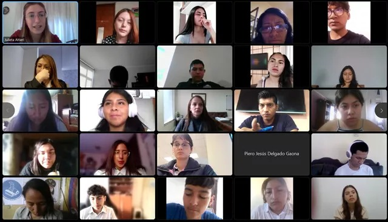
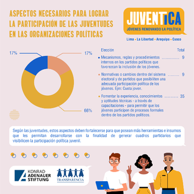
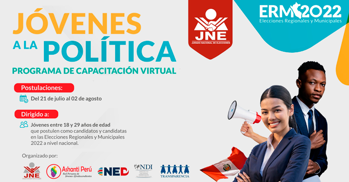

¿Quiénes somos?
Soy Joselyn, una estudiante de Ciencia de la Computación apasionada por la política y el activismo. Abrí este sitio con la finalidad de brindar información sobre política para jóvenes, y promover su participación activa en la sociedad y en la toma de decisiones políticas. Mi objetivo es empoderar a los jóvenes para que se involucren en los asuntos políticos, comprendan la importancia de su voz y puedan contribuir al desarrollo de una sociedad políticamente consciente y comprometida.
Participantes
Joselyn Quispe
Encargada de la planificación, organización y supervisión general del proyecto.
Eventos
-
II Encuentro Regional de jóvenes líderes por la integración
Lima será sede los días 09,10,11 de agosto del «II Encuentro Regional de Jóvenes Lideresas y Líderes por la Integración: Participación juvenil para la gobernanza y la democracia en la región Andina», organizado en conjunto entre el Parlamento Andino y CAF – Banco de Desarrollo de América Latina y el Caribe.
En este II Encuentro se estima la partición presencial de 213 jóvenes lideresas y líderes de Bolivia, Chile, Colombia, Ecuador y Perú, que integran el programa Parlamentos Andinos Juveniles y Universitarios, así como de 550 jóvenes que participarán de manera virtual.
El objetivo de esta reunión es formar a jóvenes lideresas y líderes de la región andina en habilidades de liderazgo, democracia, gobernanza, sostenibilidad, equidad de género, integración, entre otros, para su desarrollo profesional, personal, y el fortalecimiento de sus habilidades en liderazgo, elementos esenciales para su inserción crítica y propositiva en la política.
Para saber más acerca de este evento, dale click al siguiente enlace: Link
 -
JuvenTica: Jóvenes renovando la política
JuvenTica es un proyecto de investigación impulsado por la Fundación Konrad Adenauer y Transparencia Perú que tiene como objetivo identificar los retos y oportunidades de la participación política desde las juventudes, producto del debate y consenso de jóvenes de diversas organizaciones políticas en las regiones de La Libertad, Cusco, Arequipa y Lima. Para ello, se seleccionarán militantes de partidos políticos de las regiones indicadas que, de manera participativa bajo un enfoque inclusivo empleando metodologías ágiles, compartan propuestas concretas y viables a fin de fortalecer nuestro sistema democrático.
Completar la Ficha de postulación en el siguiente enlace: Link
 -
Jóvenes a la política: programa de capacitación virtual para jóvenes candidatos a las ERM 2022
El Programa "jóvenes a la política" busca brindar conocimientos teóricos y herramientas meteorológicas para que los candidatos y candidatas jóvenes puedan desempeñar una campaña política exitosa y una adecuada labor en los cargos de elección popular, a fin de promover espacios de diálogo, mecanismos de consulta y participación juvenil en los procesos de toma de decisiones de los gobiernos subnacionales, que contribuyan a la reducción de las desigualdades socioeconómicas de las juventudes peruanas en Lima, Callao, Arequipa, Cusco, La Libertad y Lambayeque.
Puedes unirte a este programa en el siguiente enlace: Link
